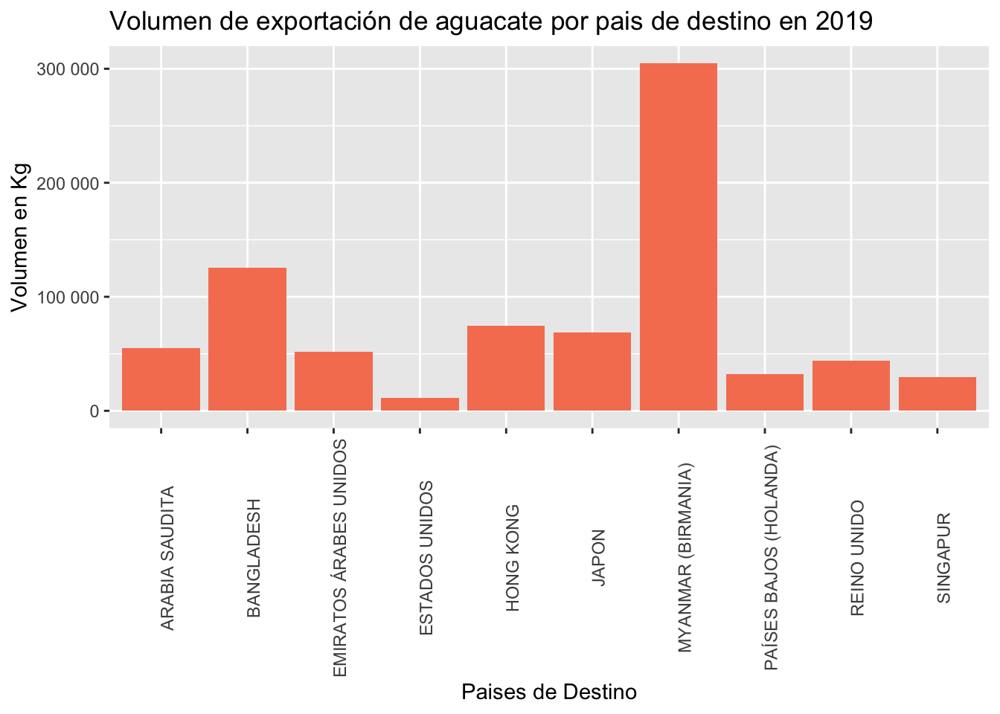
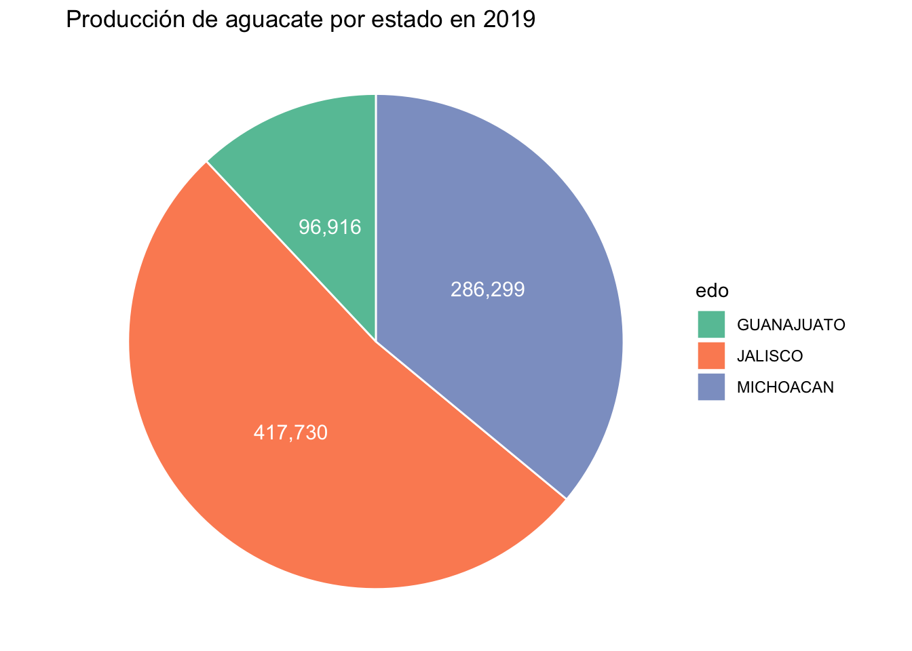

11.1 Gráfico circular
En particular para los gráficos circulares se recomienda:
Asegurarse que los porcentajes sumen \(100\%\)
Iniciar con el primer segmento a las 12 del día e ir llenando en sentido de las manecillas del reloj.
Cuando se pueda, ordenar los segmentos por tamaño de mayor a menor.
Evitar pies de mas de 6 segmentos.
Usar tonos del mismo color para identificar proporciones de una variable.
Ejemplo
Usando los mismos datos de exportación diaria de aguacate. Realizaremos una representación gráfica del volumen de exportación de aguacate observada en 2019 para cada país destino.
library(ggplot2)
paises <- c("MYANMAR (BIRMANIA)","BANGLADESH","HONG KONG","JAPON","ARABIA SAUDITA", "EMIRATOS ÁRABES UNIDOS", "REINO UNIDO", "PAÍSES BAJOS (HOLANDA)", "SINGAPUR","ESTADOS UNIDOS")
vol <- c(304734.62, 125240.00, 74578.50, 68925.24,55285.20,51517.44, 43760.00, 32092.50, 29610.00, 11481.36)
D1 <- data.frame(paises,vol)
ggplot(D1, aes(x = paises, y = vol)) +
labs(x="Paises de Destino", y="Volumen en Kg", title="Volumen de exportación de aguacate por pais de destino en 2019")+
geom_bar(stat = "identity",fill="#f68060")+
theme(axis.text.x = element_text(angle = 90)) +
scale_y_continuous(labels = scales::number)
Y también presentaremos gráficamente la tabla de producción de aguacate por estado de la república que presentamos en la sección de tablas.
edo <- c("JALISCO","MICHOACAN","GUANAJUATO")
vol <- c("417,730","286,299","96,916")
por <- c(52,36, 12)
D1 <- data.frame(edo,vol,por)
ggplot(D1, aes(x="", y=por, fill=edo)) +
geom_bar(stat="identity", width=1,color="white") +
coord_polar("y", start=0)+
theme_void()+
geom_text(aes(label = vol,x = 1), color = "white", size=4,
position = position_stack(vjust = 0.5))+
scale_fill_brewer(palette="Set2")+
labs(title="Producción de aguacate por estado en 2019")